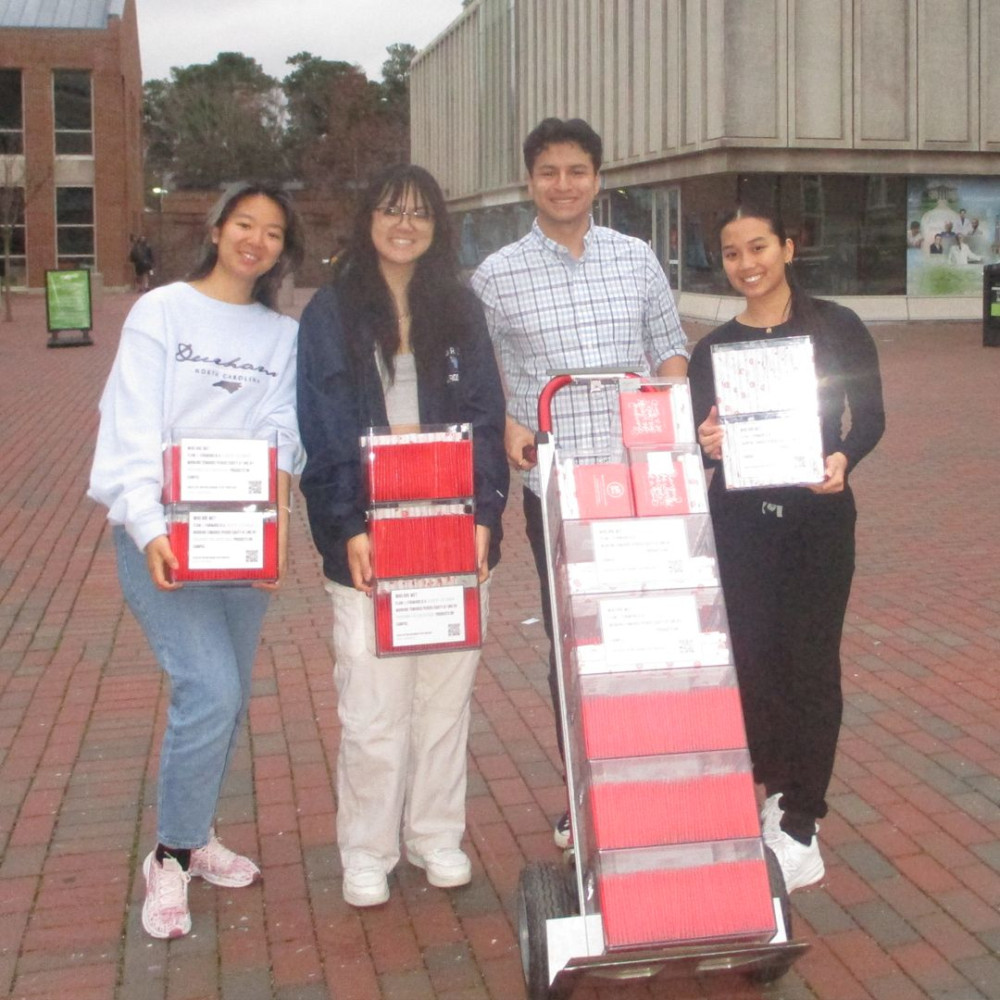
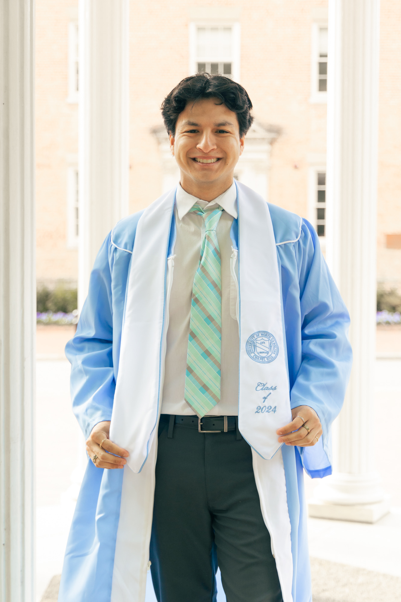
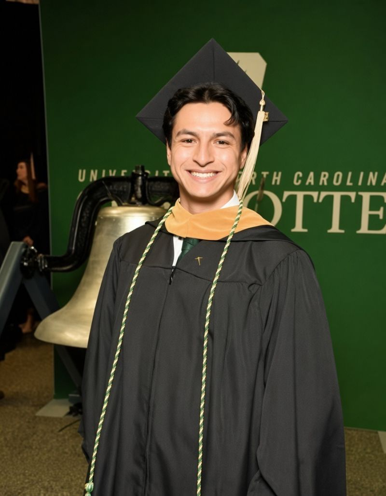
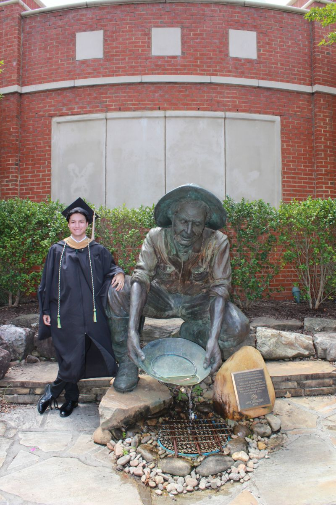
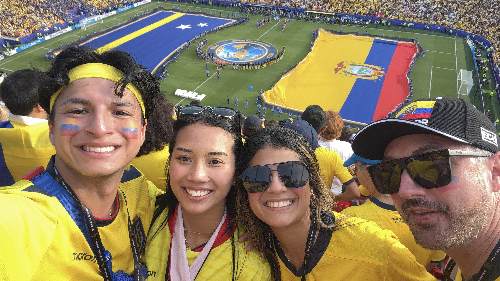
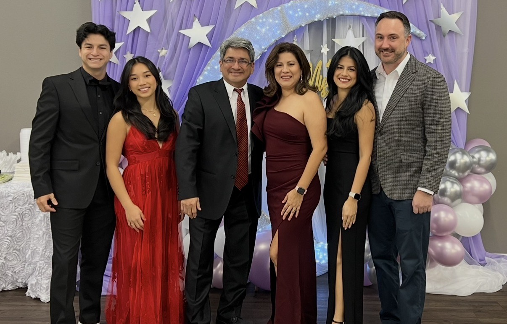

About Me
My name is Boris Torres. My name rhymes.
My parents came to the United States from Ecuador in search of greater opportunities for our family. As the first person in my entire family to be born in America and a first generation college student, I hope to honor the future they imagined when they made that journey. Their love, encouragement, and daily support mean so much to me.
I earned my B.A. in Economics at UNC Chapel Hill in May 2024, with minors in Information Systems and Spanish for Business. During my time at Carolina, I helped found FlowForward, an initiative providing free menstrual products on campus. That experience gave me a newfound appreciation for economics, as I saw firsthand how policy and greater access to essential resources can make a meaningful difference in a community.
After graduating, I pursued an MBA at UNC Charlotte to build practical skills in management and organizational decision making that I had not yet explored through formal coursework. I took graduate economics classes as electives, which deepened my interest in mathematical analysis and introduced me to the research questions I wanted to explore further. Building on that foundation, I made a deliberate decision to pursue an M.S. in Economics while continuing my MBA studies. I completed my MBA in August 2026 and expect to graduate with my M.S. in Economics, concentrating in Quantitative Methods, in May 2027.
My research interests are in health economics and sports economics. I’m interested in how access to healthcare shapes people’s lives and how economic reasoning can help us understand competition and performance in sports. My current research explores home advantage in European soccer, bringing together my academic interests and my love of the game.
Outside the classroom, I work full time at Wells Fargo. Working with large datasets has helped me become more comfortable finding patterns, asking questions, and making sense of complex information. Balancing work and graduate study has also given me a deeper appreciation for the time I spend learning.
In my free time, I love playing tennis, watching soccer, and spending time with my loved ones. Roger Federer is my favorite tennis player, and I proudly support Manchester United and Ecuador’s Barcelona SC. When I’m away from work and coursework, you can often find me on the tennis court. If you’d like to play a match, feel free to get in touch.






Photo 1 of 6. FlowForward Bin Distribution.